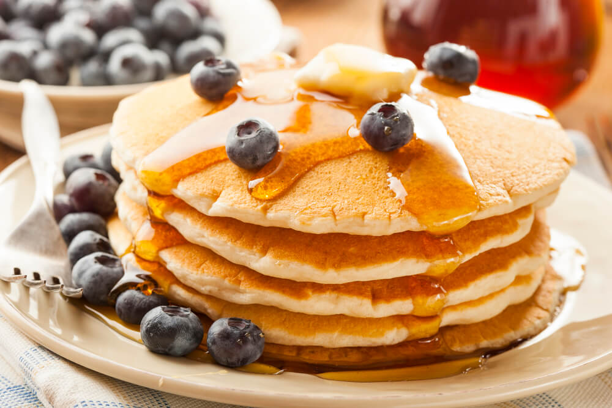

Pancake Recipe

Ingredients
- 2 Cups Egg Whites
- 4 Slices White Bread
- 4 Packs Sweetener
- 2 tsp Cinnamon
- 1 tbsp Vanilla Extract
- 1.5 tsp Guar/Xanthan Gum
- 100g blueberries
- 0.5 cup Low Calorie Syrup
- Cooking Spray
Steps
-
In a blender, add bread slices, egg whites, guar/xanthan gum,
sweetener, vanilla extract,and cinnamon.
-
Blend on high until mixture is uniform in consistency. Remove
mix from the blender and add to a fridge-safe airtight
container.
-
(OPTIONAL): Let sit for 2-3 hours or more in the refrigerator.
The longer you let the mixture rest, the better it binds. (Note:
it can be cooked right away but it's better if it has time to
sit).
-
Heat a griddle over low-medium heat. Spray griddle with cooking
spray. Add mixture to griddle and let sit for 1-2 minutes until
edges appear cooked through.
- Add blueberries to the pancake in the griddle.
-
Once edges start to brown and pancake appears to be visibly
cooked about 2/3 of the way, flip the pancake in the griddle and
let sit another 1-2 minutes.
-
Remove pancake from the griddle and serve on a plate with low
calorie syrup or leftover blueberries.